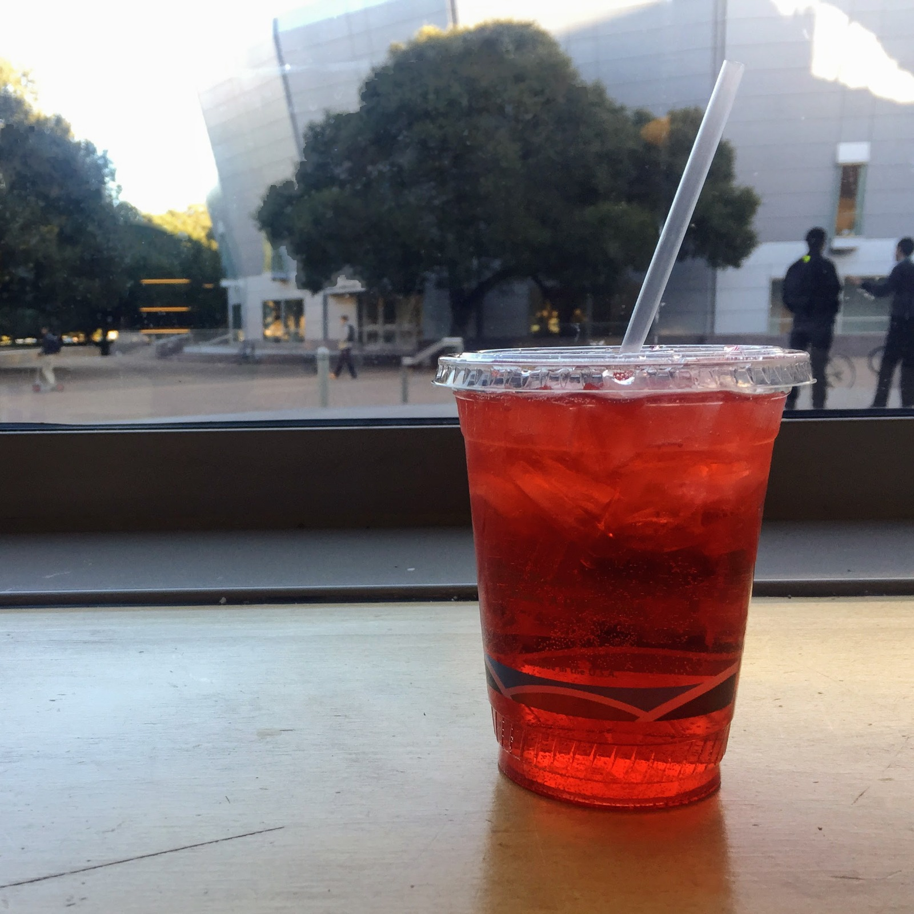

1. Italian soda at Bytes
Near Block A, CCT IDC, Sector 26
When's the last time you've had an Italian soda? It had been a while for me, but I wanted to join my friend for a non-caffeinated beverage at Bytes and became reacquainted with the combination of fizzy water and artificial fruit syrup. Italian sodas are not so sweet as a normal soda and not so boring as a flavored carbonated water. The Italian sodas at Bytes also have cream in them (or maybe they do if you ask; I haven’t tried), which makes it a nice coffee shop alternative for the times when you’re feeling a refreshing drink that doesn’t have caffeine or milk.
Recommendation: Raspberry Italian soda

2. Bubble tea at Pop Tea Bar
Near Block A, CCT IDC, Sector 35
Monday's a usually groan-worthy day of the week. The lockers are done well with a mixture of wooden cargo displays with classic old books on either side of the window area modestly shaded with a broken frame...
Recommendation: Classic Milk Tea with tapioca & an order of popcorn chicken.

3. Latte at CoHo
Near Block A, CCT IDC, Sector 34
I can’t tell you whether CoHo has a particularly amazing Vanilla Bean Latte, only because CoHo is the only place I’ve ever ordered a Vanilla Bean Latte from...
Recommendation: Vanilla Bean Latte

4. Agua Fresca at Nexus Cafe
Near Block A, CCT IDC, Sector 29
Nexus Cafe has a lot of lovely things packed into its cafeteria space, including agua fresca! Grab a cup of this fresh and fruity beverage before you head to the check out line...
Recommendation: Agua Fresca